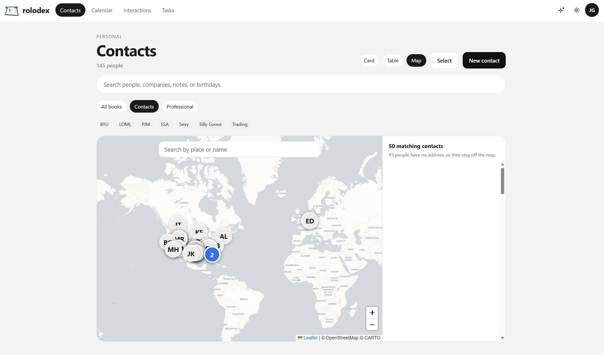

Shared contacts
Put a person in a user group with View or Edit. Several accounts can keep one shared record without cloning cards.
rolodex
your people. your books.
A self-hosted relationship manager for the people you know — with the history, calendar, and tasks that travel to your phone.
Features
Rolodex holds the address book, the calendar, the tasks, and the story of how you know someone — then syncs a clean copy to every device that speaks CardDAV or CalDAV. Share people with the household, and collaborate without handing over the whole book.

Put a person in a user group with View or Edit. Several accounts can keep one shared record without cloning cards.
Owner, Administrator, Editor, Contributor, and Viewer decide who can change people, events, and tasks.
Events and to-dos live beside the people they belong to. CalDAV keeps phones and desktops in step.
Each phone gets its own client password and last check-in. The website password never goes on the device.
The first visit creates the administrator. Registration stays invite-only until you open it under Admin → Security.
Optional authenticator apps or emailed codes once notifications are turned on.
Link Immich faces to contacts. Optionally pull an outside mailbox or calendar. Both stay off until you enable them.
Enable the add-on and point an AI client at /mcp for read-only contacts, relationships, and interactions.
Deleted people sit in Trash until restored or the retention window ends — then the next sync catches up.
Compare
Clay (now Mesh) captures a wide automatic timeline in the cloud. Monica is the classic open-source personal CRM. Rolodex is built for self-hosters who want phone sync and a living network on their own machine.
| Capability | Rolodex | Clay / Mesh | Monica |
|---|---|---|---|
| Hosting model | Self-hosted on your server | Hosted SaaS | Self-host or hosted |
| License | AGPL-3.0 | Proprietary | AGPL |
| Phone address book | CardDAV | Native apps & imports | Web-first (community clients) |
| Calendar & tasks | CalDAV on the same origin | Calendar import / sync | Reminders & activities |
| Relationship graph | Named ties + network map | Timeline & enrichment | Family & relationship links |
| Share & collaborate | Workspace roles + per-person groups (view/edit) | Team plans / shared intros | Multi-user on a shared instance |
| Data capture style | Deliberate records + optional mail/calendar check-in | Automatic capture from many accounts | Mostly manual, by design |
| Photos | Immich links (optional) | In-app media | Contact photos / attachments |
| Cost to run yourself | Your hardware only | Subscription | Your hardware only |
Clay rebranded as Mesh. Feature sets move; this table reflects the usual product shapes as of late 2026: cloud automation versus open-source personal CRM versus Rolodex’s self-hosted sync-first approach.
Deploy
Postgres and Rolodex. The published image is gallinij/rolodex:latest (built when a GitHub
Release is published). That single HTTP port is the website, /api/, CardDAV, and CalDAV.
cp .env.example .env
docker compose pull
docker compose up -dcp .env.example .env
docker compose up -d --buildProduction layout, volumes, upgrades, and the full compose file live in the Docker Compose guide.
Sync
Create a named client password under Settings. Sign in with your email and that client password — never the website password. The network map above is the living book; phones get a clean CardDAV/CalDAV copy.
Ownership
Uploaded files live in the uploads volume. Backups are a Postgres dump plus a tar of uploads. An owner can also download a database dump from Settings when pg_dump is available.
Administrators can offer Authentik, Authelia, Keycloak, or another OpenID provider. Password sign-in stays available.
Workspace roles for the household, and groups so one contact can be shared for view or edit across several accounts.
Read the code, run it yourself, and keep modifications that you offer as a network service available to the people using them.